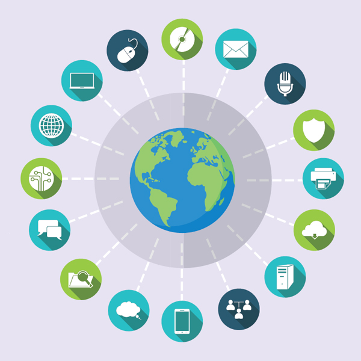

5년 후 경쟁력의 구도를 파괴할 Disruptive Innovator들은 지금 무엇을 하고있을까 ?
앞으로의 핵심 경쟁력은 사업모델의 변화에 얼마나 신속하게 내부의 프로세스, 시스템이 빠르게 대응하고
직원들이 외부의 새로운 기술을 습득하게 하고 자유롭게 활용할 수 있게 하는 내부의 일하는 방식이 될 것이다.
사업모델에 따라 신규사업을 할 경우 거기에 필요한 프로세스와 시스템을 새롭게 구축하면서 시간을 지체 할 것인가 ?
계속 생성되는 데이터를 활용하여 새로운 부가가치를 위해 이전 처럼 체계적으로 정비를 하면서 시간을 보내고 있을 것인가 ?
내부의 이슈와 Risk 관리를 위한 좋은 해결 방안이 외부에 있음에도 찾지 못하거나 협업하는 방식이 어렵다면
어떻게 경쟁력을 유지하나 ?
프로세스, 시스템, 솔루션, 데이터 분석 및 디지털 활용에 대한 직원역량에 대하여
기업이 추구하는 전략과 연계하여 관련 사항들을 효과적으로 연계하고 쉽게 사용할 수 있도록 방향을 제시하고 데이터를 기반으로 제시하고자 한다.
혁신 이전에 생각해 볼 것은 ?
지금 일하는 방식이 가장 최선인 지에 대하여, 외부 변화에 얼마나 유연한 지 생각해 보자.
... 지금 많은 조직에서 산출되고 있는 결과들이 지금처럼 가면 연말에 사업목표를 달성할 수 것을 파악하는 것이 아니라, 우리가 최대로 할 수 있는 것이 무엇이며
그 것을 얼마나 잘 하고 있는 지를 우선 알아야 한다.
... 잠재된 Risk의 사전관리를 어떻게 하고 있으며 그 방식이 진정 효율적인 것이며, 그 것이 경쟁자들 보다 효과적인 방식인가 하는
의문을 갖는 것이 시작이다.
가까운 미래에 우리는 시장이나 산업에서 어디쯤 있을까 ?
변화가 필요하다면 어떻게 변화를 해야 하는가 ?
그것이 우리 사업을 가능케할 핵심 경쟁력인가 ?
일하는 방식과 데이터 그리고 디지털 기술들
중요한 것은 사업 모델이며 어떻게 가능하게 할 것인가 이지 그 것을 꼭 내부에 만들 필요는 없다 : 지금 기업에서 혁신의 핵심은 얼마나 최고의 프로세스를 구축하는 것이 아니라 기업은 지속적으로 프로세를 손쉽게 변화시킬 수 있으며,
직원들이 자유롭게 외부의 자원을 활용하거나 협업이 가능하도록 디지털 기술을 능숙하게 다룰 수 있도록 하는 것이다.
그것을 실행할 프로세스, 데이터, 솔루션 그리고 내부 역량의 준비에 대하여 :
지금 디지털 기술의 핵심 중의 하나는 데이터를 얼마나 직원들이 Machine learning, AI 및 통계 솔루션으로 다루어 현재의 문제점을 파악하거나
새로운 방식에 대한 결과를 사전에 해석할 수 있는 역량이다.
결국, 현재 기업의 역량은 프로세스의 유연성, 일회성 혁신이 아닌 외부 변화에 신속한 대응이 가능한 지속적인 혁신과 직원들의
데이터를 기반으로 하는 디지털 활용 역량이 될 것이다.
외부 자원의 손쉬운 활용과 외부변화에 신속한 대응의 업무 환경
핵심은 내가 고객에게 제공하는 제품/서비스 자체와 그 것을 전달하는 방식에서 최소한 전달하는 방식은 지금의
디지털 기술, Open source, CLOUD를 이용하여 내부에 구축하는 것이 아닌 최적의 것을 빌려서 사용하면 되는 시대이다.
... 기업 제조 경쟁력 측면에서 차원이 다른 경쟁을 위해선 신속하게 외부 변화에 대응하거나 외부와 협력을 자유롭고 효과적으로 할 수 있도록 외부 자원을
내 것으로 활용할 수 있는 역량 수준이 될 것이다.
... 외부의 좋은 기술을 경쟁자보다 빠르게 내부에 가져다 사용하거나 외부와 협력을 효과적으로 할 수 있는 지를 지금의
프로세스, 시스템, 데이터 활용, 직원들의 역량을 먼저 점검해 보자.
Digerati 인재 육성 : API Economy를 이해하고 Open source, CLOUD 활용하여 자신의 업무에 스스로 활용할 수 있는 직원들이
필요하며 그들이 그 것을 자유롭게 할 수 있도록 하게해야 한다.
API Economy 이해 : 일하는 방식에 대하여 우리가 고민하는 모든 것들은 이미 시장에 있으며
그 것을 효과적으로 활용하는 시대이다.
Open source, CLOUD 활용 : 자신만의 독특한 일하는 방식은 그 것 자체가 핵심역량 이거나 경쟁력이 아니라면 가장 보편적이고
쉽게 사용할 수 있는 것이 가장 경제적이다.
... 최소한 지금의 디지털 기술, Open Source, CLOUD를 활용하지 않는다면 일하는 방식에서 5년 후 경쟁력을 잃게 될 것이다.
Reference : 어떻게 스스로 학습할 것인가 ?

Image source